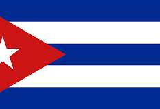

Étape 10 : Cuba 
Dixième étape du Trophée Jules Verne à La Havane, Cuba, un circuit urbain exigeant de 22,2958 km à parcourir 13 fois pour un total de 243,4 km. Chaque tour intègre deux secteurs pavés de 700 m classés 2 étoiles, mettant à rude épreuve l’endurance et la technique des coureurs. Le tracé sinueux dans les rues de la capitale cubaine favorisera la vigilance tactique et la maîtrise du peloton.